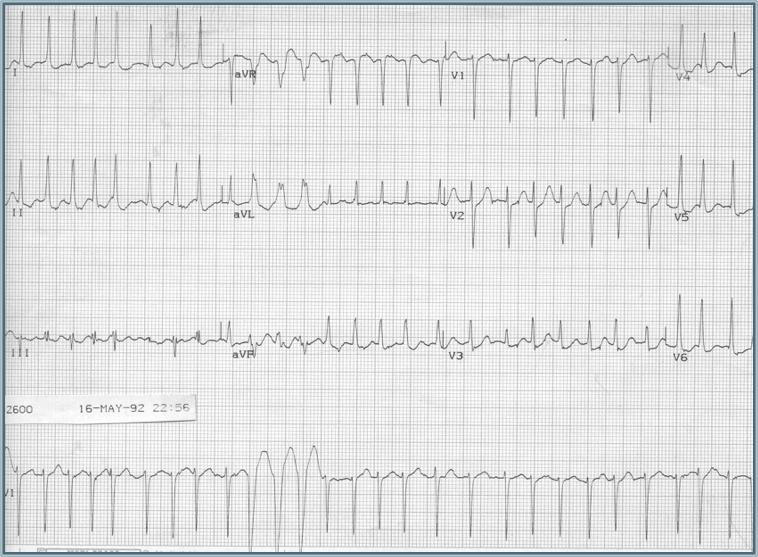
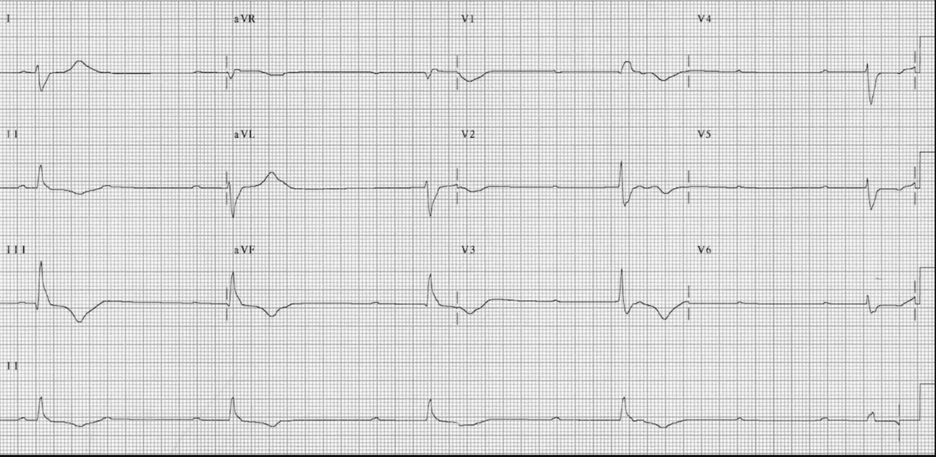

2 Leadership Skills
2.1 Effective Leadership Skills
- Establish a clear leader
- Collaborate and share information
2.2 Scenario
2.2.1 RRT to RM S408.
2.2.2 Sign-out: 81M, SVT now stable.
2.3 Scenario
Suddenly, HR 160 and MAP drops 85 to 65

What is this rhythm, and what would you do?
2.4 Scenario
What’s your schema for this situation?
What key data informs your treatment?
How do you convey your thinking to the room?
2.5 Scenario
You share your assessment and plan to administer IV metoprolol with the team, then…
3 individuals (DOCTOR badges) you don’t know enter the room and don’t introduce themselves.
You discuss the situation with the family outside the room - many questions.
RN asks clarification: what metoprolol dose?
2.6 Scenario
While talking with family, RN calls out the patient’s not responding. A new EKG shows

What is this rhythm, and what do you do?
2.7 Scenario (postscript)
Individuals are primary CV team, who are unaware it’s a rapid.
Turns out the primary team had also told the RN to give Metop - multiple doses.
Patient requires trans-cutaneous pacing - who’s making that decision?
What went wrong?
2.8 Establish a clear leader:
2.8.1 Are you running this RRT or not?
“I’m ____, the resident on the code team. Is anyone running this rapid?”
“Ok, I’m running this rapid”, or “Can I take Over”, or “OK, how can I help?”
2.9 Establish a clear leader:
2.9.1 Be the point person
2.11 Scenario Revisited
2.11.1 What would you do differently?
2.12 Scenario Revisited
2.12.1 What would you do differently?
Primary team identified; confirmed they want you to run response
Standing at the head of the bed, delegating all other tasks.
You verbalize your rhythm interpretation schema.
Ideas from the entire team